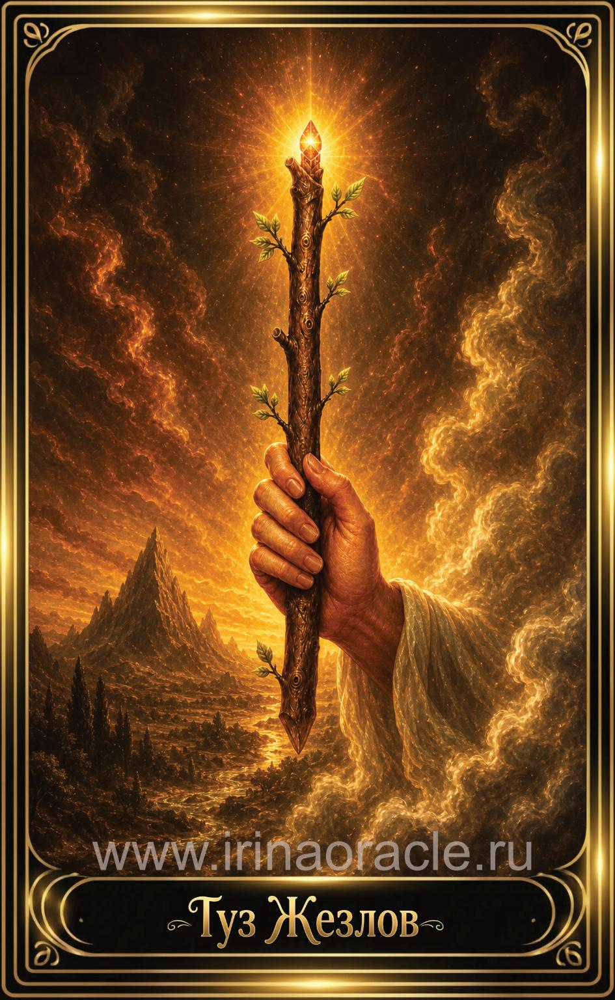

Туз Жезлов — значение карты Таро
Туз Жезлов — значение карты Таро

Туз Жезлов — это чистая энергия начала, вдохновение и импульс к действию. Он символизирует рождение идеи, творческий огонь, мотивацию и возможность, которая открывается прямо сейчас. Это карта старта, силы и внутреннего «да», которое невозможно игнорировать.
Общее значение
Туз Жезлов указывает на мощный импульс, новый проект, вдохновение или шанс, который может изменить ситуацию. Это энергия роста, активности и уверенного движения вперёд.
Карта говорит: действуй — момент идеален для начала.
Любовь и отношения
В любви Туз Жезлов символизирует страсть, притяжение, яркое начало или возрождение энергии в отношениях. Это вспышка интереса, искра, желание быть вместе.
В тени — импульсивность, вспыльчивость или отношения, основанные только на страсти.
Работа и финансы
В работе Туз Жезлов — это старт проекта, вдохновение, новая идея, предложение или возможность проявить себя. Это карта предпринимателей, лидеров и творцов.
В финансах — шанс на рост, но требующий активности и инициативы.
Здоровье
Туз Жезлов указывает на прилив энергии, улучшение состояния, мотивацию и желание действовать. Это карта жизненной силы.
Иногда — необходимость направить энергию конструктивно.
Совет карты
Начни. Сделай первый шаг. Туз Жезлов советует использовать шанс, который появился, и не откладывать действие.
Это момент, когда Вселенная говорит: «Да».
Теневая сторона
В тени Туз Жезлов проявляется как хаотичность, импульсивность, выгорание или нереализованная энергия. Иногда — как страх начать.
Карта напоминает: энергия требует направления.